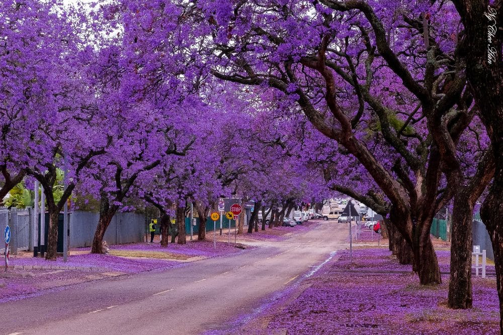

TỔNG HỢP NHỮNG CẨM NANG DU LỊCH ĐÀ LẠT 2021
Đà Lạt là thành phố du lịch trên cao nguyên Lâm Viên, quá quen thuộc với một số du khách trong và ngoài nước. Thế nhưng, vẫn có rất nhiều du khách chưa có dịp đến đây. Và vì chưa đến nên chưa biết phải làm thế nào để có được một chuyến đi hoàn hảo. Đây chính là lý do hôm nay Viet Fun Travel tiếp tục thông tin đến Quý độc giả bài viết “Tổng hợp những cẩm nang du lịch Đà Lạt từ A đến Z”.
Hi vọng, trong hàng triệu hàng ngàn bài viết chia sẻ về Cẩm nang du lịch Đà Lạt thì bài viết này góp phần nhỏ cho chuyến đi của Quý khách.
1. Đến Đà Lạt bằng phương tiện gì là tốt nhất?
Đà Lạt cách thành phố Hồ Chí Minh chừng 300km. Với khoảng cách này, tốt hơn hết du khách chọn máy bay là phương tiện vận chuyển.
Sân bay Liên Khương Đà Lạt cách trung tâm thành phố một đoạn không quá xa. Tới đây, du khách muốn vào thành phố, có thể bắt một chiếc taxi với giá khoảng 250.000 đồng/ lượt. Máy bay là sự lựa chọn số 1 đối với những du khách ít có thời gian, muốn tiết kiệm thời gian đi lại.
Với nhiều người, máy bay là phương tiện tốt nhất để đến Đà Lạt nhưng cũng có một số du khách chọn đến Đà Lạt bằng xe Open Bus, xe du lịch chất lượng cao, xe máy… Vậy, tùy vào điều kiện, điểm xuất phát, du khách có nhiều lựa chọn về phương tiện di chuyển đến Đà Lạt.
2. Di chuyển trong nội thành Đà Lạt bằng phương tiện gì là thuận tiện nhất?
Hầu hết các bài viết tổng hợp cẩm nang du lịch Đà Lạt đều chia sẻ rằng, xe máy là phương tiện di chuyển tốt nhất trong thành phố Đà Lạt.
Chỉ cần chuẩn bị Chứng minh nhân dân, du khách từ phương xa đến đã có thể thuê 1 chiếc xe máy với giá khoảng 100.000 đồng/ ngày (đối với xe số) hay 150.000 đồng/ngày (đối với xe tay ga) để đi lòng vòng, dạo chơi, tham quan thành phố.
Tuy nhiên, với nhiều du khách chưa quen đường đi nước bước trên này, hoặc ngại không thể chạy xe ở một nơi lạ, có thể thuê taxi để di chuyển giữa các điểm tham quan.

Còn với những ai thích “toàn tâm towidth="700" height="400"àn ý” tận hưởng không gian Đà Lạt, họ thường chọn khám phá Đà Lạt thông qua các Tour du lịch của các đơn vị lữ hành.
Một số du khách khác lại thích thuê xe ô tô, xe du lịch trọn gói trong 1 ngày để tham quan Đà Lạt. Tóm lại, tùy vào sở thích và điều kiện mà du khách có nhiều lựa chọn cho mình về phương tiện di chuyển trong nội thành Đà Lạt.
3. Nên đến tham quan Đà Lạt vào mùa nào là lý tưởng nhất?
Có vẻ câu hỏi này rất khó để trả lời thấu đáo, trọn vẹn bởi “chín người mười ý”. Tùy vào sở thích và “gu” thẩm mỹ của mình mà du khách chọn đến Đà Lạt vào mùa nào. Mà thật ra, phân chia mùa ở Đà Lạt như mùa xuân, mùa thu, mùa đông, mùa hạ một cách tách bạch, rõ ràng thì rất khó.
Đà Lạt nằm ở độ cao khoảng 1500m so với mực nước biển, chính vì vậy nhiệt độ nơi đây thường thấp, khí hậu thường mát mẻ, trong lành. Đà Lạt không như Hà Nội nên khó có thể phân biệt được đâu là mùa xuân, hạ, thu, đông.

Cũng có du khách nó rằng khí hậu trong 1 ngày ở Đà Lạt thôi cũng đã đủ để chuyển tải khí hậu cả 4 mùa xuân – hạ - thu – đông. Vì vậy, việc lựa chọn mùa đến Đà Lạt là phụ thuộc hoàn toàn vào điều kiện và sở thích của mỗi du khách.
Thường các du khách đặt Tour du lịch Đà Lạt hay chọn đến Đà Lạt vào mùa xuân, khi hoa mai anh đào nở rộ. Đây là nhóm du khách thích cảnh đẹp của Đà Lạt vào những ngày cuối đông, đầu xuân, khoảng tháng 12, 1, 2 dương lịch.
4. Trải nghiệm nào thú vị ở Đà Lạt?
Đi du lịch, đến một vùng đất lạ, ngoài tham quan danh lam thắng cảnh, du khách còn có cơ hội trải nghiệm những thứ độc đáo mà ở vùng miền mình sinh sống không thể nào có được.
Với những du khách có nhiều thời gian ở Đà Lạt thì cơ hội được “nếm trải” những điều thú vị này sẽ nhiều hơn. Tốt hơn hết là du khách nên đi các Tour Đà Lạt 3 ngày 2 đêm hay các Tour dài hơn thế mới thoải mái.
- Ăn đồ nướng: Không có gì tuyệt hơn là được thưởng thức các món nướng nóng ấm giữa tiết trời se lạnh của Đà Lạt. Đến Đà Lạt, các món nướng như bánh tráng nướng, bắp nướng, khoai lang nướng… du khách nhất định phải thử. Và nhớ kèm thêm một ly sữa đậu nành ấm nóng mới thấy hết vị ngon của các món nướng Đà Lạt.
- Vào vườn hái dâu: Thêm một trải nghiệm thú vị ở Đà Lạt mà hầu như du khách nào cũng thích là vào vườn dâu tham quan và hái dâu.
Đà Lạt có nhiều vườn dâu chuyên mở cửa phục vụ khách vào tham quan, lựa dâu và hái dâu mua về làm quà. Nếu như du khách thích cảm giác được tự tay hái những quả dâu chín mọng thơm ngon từ những cuống lá xanh tươi ngay trong vườn thì Đà Lạt là điểm đến thích hợp.
- Dạo chợ đêm và mua sắm: Đến du lịch Đà Lạt, trừ những du khách đi bằng Tour Đà Lạt 1 ngày, hành trình có thể kết thúc trước buổi tối thì các Tour Đà Lạt còn lại sẽ có nhiều thời gian để du khách dạo chợ đêm và mua sắm.
Đây cũng được xem là một trải nghiệm thú vị mà hầu hết du khách du lịch Đà Lạt đều yêu thích. Dạo chợ, thưởng thức các món ngon Đà Lạt và mua đặc sản Đà Lạt về làm quà là những việc mà du khách nên làm khi đến đây.

5. Lưu ý lựa chọn trang phục du lịch Đà Lạt phù hợp
Đặc thù khí hậu Đà Lạt khá lạnh nên khi đến đây du lịch, du khách nên chú ý cách ăn mặc của mình cho phù hợp để có chuyến đi vui vẻ, trọn vẹn nhất, cụ thể:
- Nên mang theo những bộ trang phục giữ ấm tốt, những chiếc áo khoác, áo len giữ ấm cơ thể để đảm bảo chuyến đi của du khách được tốt đẹp, không bị ảnh hưởng nhiều của thời tiết, khí hậu.
Trên đây là một số thông tin TNT chia sẻ đến Quý độc giả về những cẩm nang du lịch Đà Lạt. Chắc chắn một bài viết ngắn thế này sẽ không thể nào chuyển tải hết được những điều Viet Fun Travel muốn chia sẻ.